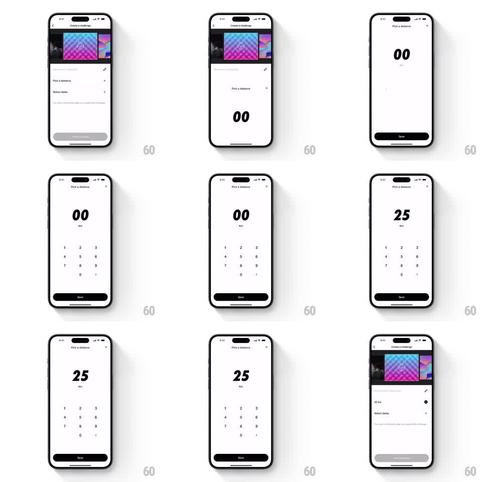

Media
Frame-by-frame

Rebuild this interaction 1:1: Nike Run Club's distance input - tapping "Pick a distance" slides up a bottom sheet with a huge italic readout and custom numeric keypad; saving writes the value back into the challenge form.

Rebuild this interaction 1:1: Nike Run Club's distance input - tapping "Pick a distance" slides up a bottom sheet with a huge italic readout and custom numeric keypad; saving writes the value back into the challenge form. ## Integration Integration: stack-agnostic spec - springs given as stiffness/damping, timed motions as duration + curve; map every value to your framework and animation library of choice. ## Scene "Create a challenge" form (challenge art carousel at top, name field, Pick a distance and Select dates rows). The sheet: white, nearly full-height, titled "Pick a distance" with an X; center stage is a giant black italic "00" over a "Km" unit label; a minimal numeric keypad (1-9, 0, backspace) in light type; a full-width black "Save" button pinned at the bottom. ## Motion spec Pattern: bottom-sheet numeric entry with live readout. - Tap the row: the sheet slides up over the form (spring stiffness ~300, damping ~30) - no bounce past the top edge. - Each keypad tap appends a digit: the new digit slides in from the right of the readout (120ms) and the whole number recenters; the digit key flashes (100ms). - Backspace drops the last digit with the same slide reversed. - Save enables (fills solid black) once the value is non-zero; tap Save: the sheet slides down (300ms, ease-in) and the form's "Pick a distance" row crossfades to "25 km" with its accessory updating (200ms). ## Calibration - The readout is the sheet's hero - keypad digits stay small and quiet so the number owns the screen. - Slide-up covers the form but leaves a sliver of context (or dimmed scrim); a full-screen takeover loses the "sheet" feel. ## Reduced motion Sheet fades in; digits update without slide. ## Don't miss - The readout is italic condensed - the slant is the brand's motion voice. - Save returns the value into the exact row that opened the sheet.